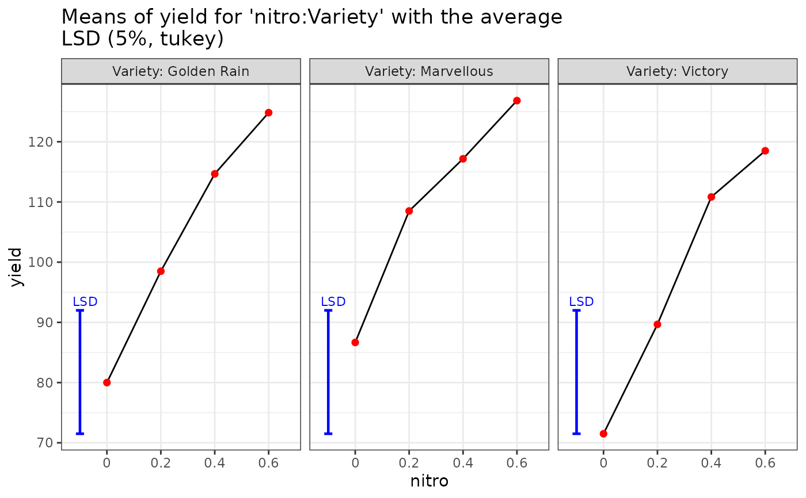
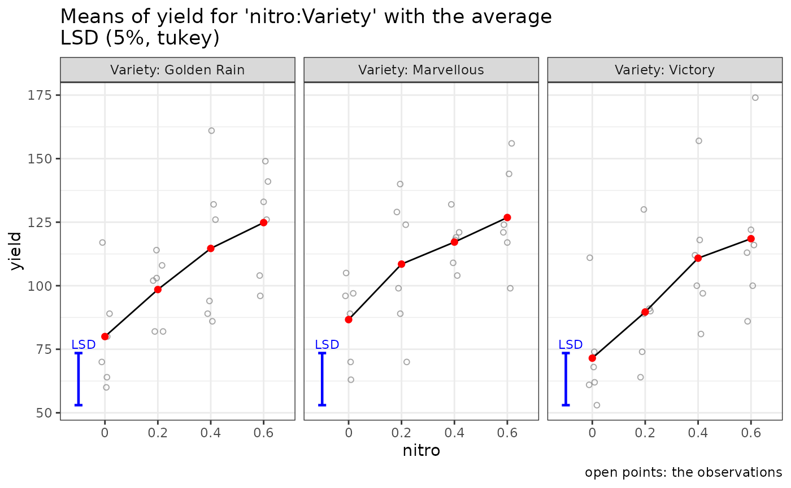
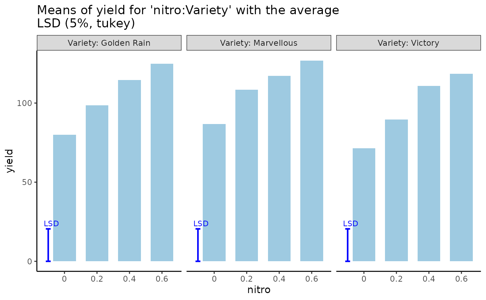
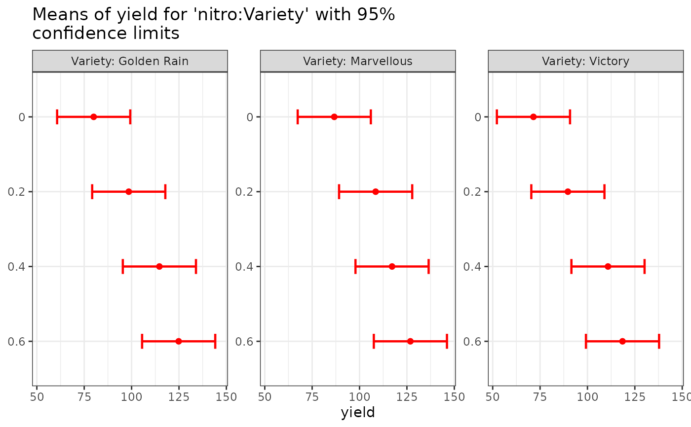
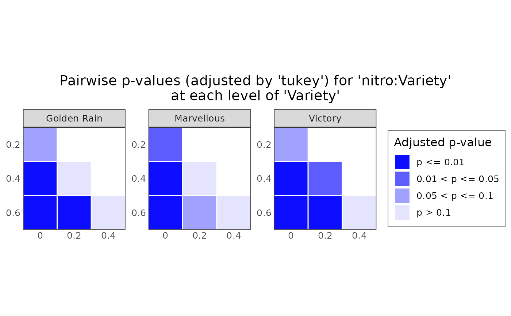
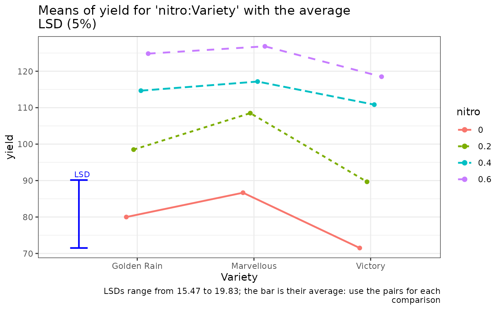
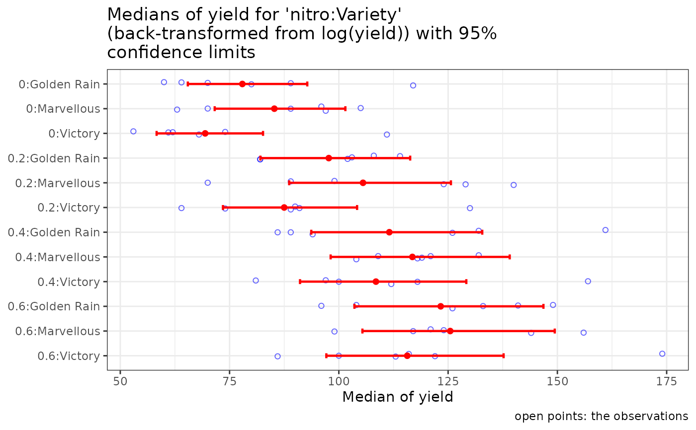

autoplot() draws a predictmeans result as a ggplot2 object: the means with one LSD
bar (as predictmeans 1.x), as bars, as horizontal confidence intervals, or the pairwise p-values.
plot() draws the same and prints it. summary() prints the means with a footer that states the
degrees of freedom, the SED and LSD ranges, the p-value adjustment and the covariate values used. All are built
from the means and pairs tables of the result: they do not compute statistics, so they can be used
in reports and Shiny apps (e.g. renderPlot(autoplot(pm))) or made interactive with
plotly::ggplotly(). Titles, labels and font sizes are changed with ggplot2, e.g.
autoplot(pm) + labs(title = "Yield") + theme_bw(14).
Usage
# S3 method for class 'predictmeans'
autoplot(object, type = c("means", "bar", "ci", "pvalue"),
interval = c("lsd", "sed", "ci", "comparison", "none"),
scale = c("auto", "model", "response"),
data = FALSE, x = NULL, group = NULL, panel = NULL,
scales = c("fixed", "free_y"), lines = TRUE,
jitter = 0.1, values = FALSE, ...)
# S3 method for class 'predictmeans'
plot(x, ...)
# S3 method for class 'predictmeans'
summary(object, digits = 4, ...)
# S3 method for class 'summary.predictmeans'
print(x, ...)Arguments
- object
A result of
predictmeans.- type
"means"(the default): points joined by lines for each level ofgroup;"bar": a bar chart of the means;"ci": each mean with its confidence limits, drawn horizontally (one row per mean; on the response scale when the means are back-transformed);"pvalue": a square level plot of the adjusted pairwise p-values (the plot ofPMplot; withatvarthe comparisons within each of its levels are blocks down the diagonal), which needs thepairstable. ("response"of earlier 2.0 versions istype = "ci"orscale = "response".)- interval
For
"means"and"bar":"lsd"(the default) draws one bar of the average LSD beside the means of each panel, as predictmeans 1.x: two means differ at the level of the result when they are further apart than the bar (exactly so when all the LSDs are equal; the caption gives their range when they are not). It is the LSD that goes with the p-values: adjusted whenadjhas a critical value. Withatvareach panel (level ofatvar) gets the LSD of the pairs compared within it."sed"draws the average SED instead;"ci"confidence limits on each mean (for each mean, not for comparing means: two means can differ while their limits overlap);"comparison"comparison intervals (mean \(\pm c\,SE\), \(c = crit \times SED/(SE_1 + SE_2)\) averaged over the pairs: means differ when their bars do not overlap; seepredictmeans);"none". One LSD bar replaces the half-LSD bars on each mean of earlier 2.0 versions: those said the same when the SEDs are equal, and looked like confidence limits.- scale
"model": the scale of the model (e.g.log(y + 1)or the link);"response": the back-transformed means (needs them);"auto"(the default):"response"fortype = "ci"when the means are back-transformed, else"model". LSD and SED bars exist only on the model scale.- scales
For
"means"and"bar"with panels:"fixed"(the default), one y axis for all panels, with the LSD (SED) bar at the same place in each, from the lowest point of the plot, so equal LSDs look equal;"free_y", each panel its own y range, with its bar from its own lowest point (the bars are then read within their panel only: the caption says so).- data
Add the observations (
TRUE; jittered points), frompm_dataof the model, on the scale shown: the transformed response on the model scale, the original response on the response scale. For a link function the data are shown only on the response scale. A data frame can be given instead (with the factors ofmodeltermand the response).- x, group, panel
Names of factors of
modeltermfor the x axis, the lines (colours) and the panels. The defaults: withatvar, the panels are its levels and x the first other factor; else x is the first factor, group the second and the panels the rest. These replaceplotordof predictmeans 1.x.- lines
For
type = "means": join the means of a group by lines (TRUE) or not.- jitter
Horizontal jitter of the data points, in units of the x categories.
- values
For
type = "pvalue": print each p-value on its tile (the default isFALSE).- digits
Number of significant digits printed (plus two).
- ...
For
plot(): arguments ofautoplot(), withxvarfor itsx(inplot()xis the result). Otherwise not used.
Value
autoplot() returns a ggplot object; plot() prints it and returns it invisibly;
summary() returns an object whose print method shows the table and footer.
Examples
library(predictmeans)
Oats <- as.data.frame(nlme::Oats)
Oats$nitro <- factor(Oats$nitro)
fm <- lmer(yield ~ nitro*Variety + (1|Block/Variety), data = Oats)
pm <- predictmeans(fm, "nitro:Variety", atvar = "Variety", adj = "tukey")
summary(pm)
#> Predicted means for 'nitro:Variety' (lmerMod model; df: Kenward-Roger, Kenward-Roger adjusted SEs)
#> Confidence limits: 95%
#>
#> nitro Variety estimate std.error df conf.low conf.high group
#> 0 Golden Rain 80.00 9.107 16.08 60.70 99.3 A
#> 0.2 Golden Rain 98.50 9.107 16.08 79.20 117.8 AB
#> 0.4 Golden Rain 114.67 9.107 16.08 95.37 134.0 BC
#> 0.6 Golden Rain 124.83 9.107 16.08 105.53 144.1 C
#> 0 Marvellous 86.67 9.107 16.08 67.37 106.0 A
#> 0.2 Marvellous 108.50 9.107 16.08 89.20 127.8 B
#> 0.4 Marvellous 117.17 9.107 16.08 97.87 136.5 B
#> 0.6 Marvellous 126.83 9.107 16.08 107.53 146.1 B
#> 0 Victory 71.50 9.107 16.08 52.20 90.8 A
#> 0.2 Victory 89.67 9.107 16.08 70.37 109.0 A
#> 0.4 Victory 110.83 9.107 16.08 91.54 130.1 B
#> 0.6 Victory 118.50 9.107 16.08 99.20 137.8 B
#>
#> 18 pairwise comparisons within each level of Variety.
#> SED: min 7.683, mean 7.683, max 7.683
#> LSD (5%, tukey): 20.5 (equal for all pairs)
#> p-values: t tests, adjusted by 'tukey'.
#> Means sharing a letter are not significantly different at the 5% level within each level of Variety.
#> Comparison intervals: mean +/- 1.125 SE (72.3% intervals); means differ at the 5% level when these do not overlap. The 95% confidence limits are not for comparing means.
ggplot2::autoplot(pm)

ggplot2::autoplot(pm, data = TRUE)

ggplot2::autoplot(pm, type = "bar")

ggplot2::autoplot(pm, type = "ci")

ggplot2::autoplot(pm, type = "pvalue")

plot(predictmeans(fm, "nitro:Variety"), xvar = "Variety", group = "nitro")

fl <- lm(log(yield) ~ nitro * Variety, data = Oats)
ggplot2::autoplot(predictmeans(fl, "nitro:Variety"), type = "ci", data = TRUE)
#> The response is log(yield): the means are also given back-transformed to the original scale (trans = I for the model scale only).
